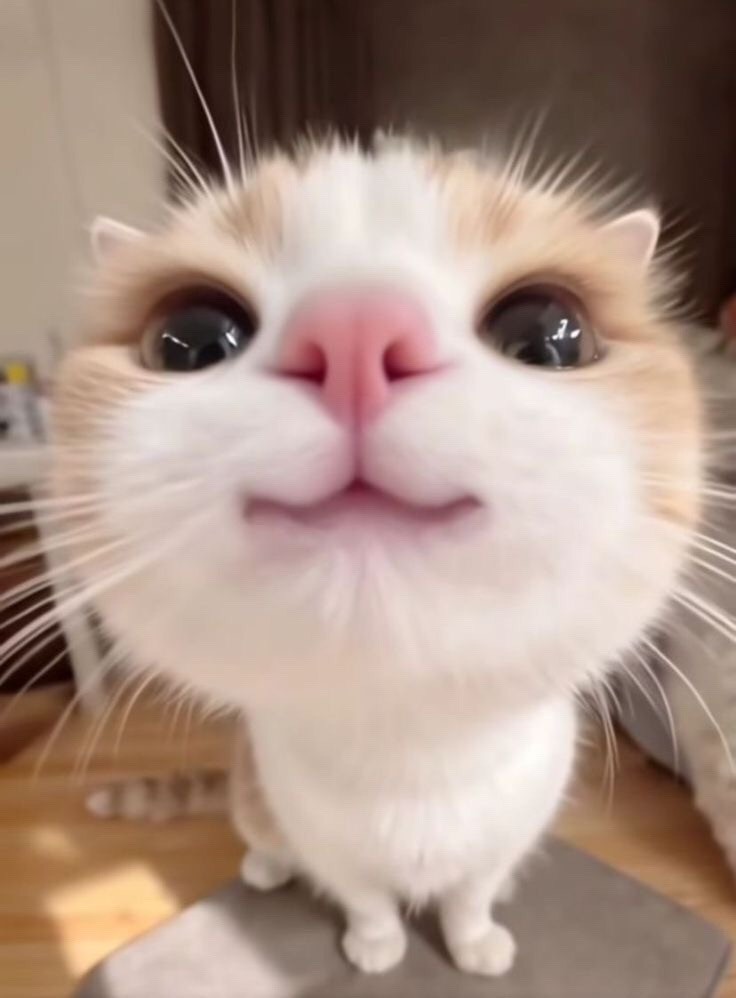

Фритрек и нулевой спринт: Подготовка к работе

</ВДОХНОВЕНИЕ>Это было самое начало пути. На этом этапе важно было проникнуться основами и настроиться на учёбу. И, возможно, подумать, как новые знания могут повлиять на ваше будущее.
В начале обучения я была очень вдохновлена и с нетерпением ждала первого спринта.